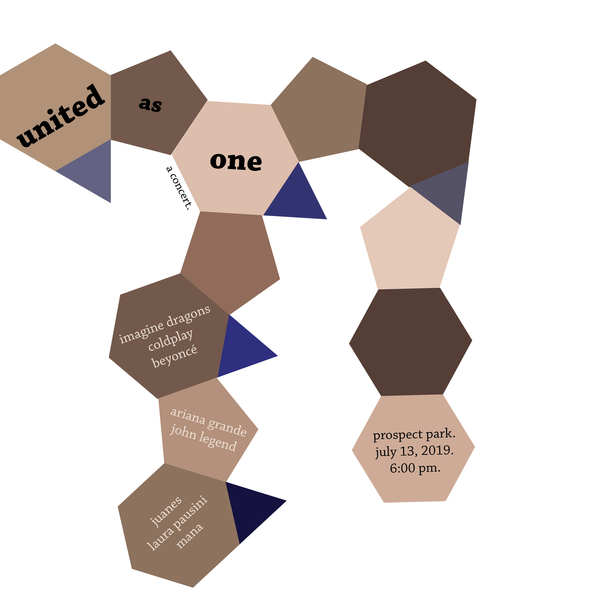

Digital Design and Usability
For this assignment, we had to create 7 designs based on 7 of the typographic systems: Axial, Radial, Dilatational, Random, Transitional, Bilateral, and Modular. Our source material had to be a concert/music festival of our own making, which included choosing at least 4 bands, a concert venue, a time, and a date. The idea behind the projectis about experimenting with using typography, shapes and color as only design elements.